ASYA'DA EĞİTİM · BRAND STUDIO
ASYA'DA EĞİTİM · BRAND STUDIO
Onaylı kimlik
Mühür, wordmark ve beş kilit. Geometri değişmedi, yeniden çizim yok — bu sayfadaki her SVG, manifestteki kanonik dosyaların birebir aynısı.

Üç satır tek ölçüde (881 birim), orijinal kırmızı kesme işareti korunuyor. Kaynak: docs/asyada-seal/typography-weights/assets/tr550-en350-wordmark.svg (SHA 668c0026…).
Kilit ailesi
Her karttaki görseller kanonik dosyalardır. D-04 yalnızca Türkçe'dir; İngilizce eklenemez.
P-01 · Primary stacked
Kapaklar ve ortalanmış imzalar · Minimum 352px / 75mm

cdc4394d9fe6…
16fc8c66e338…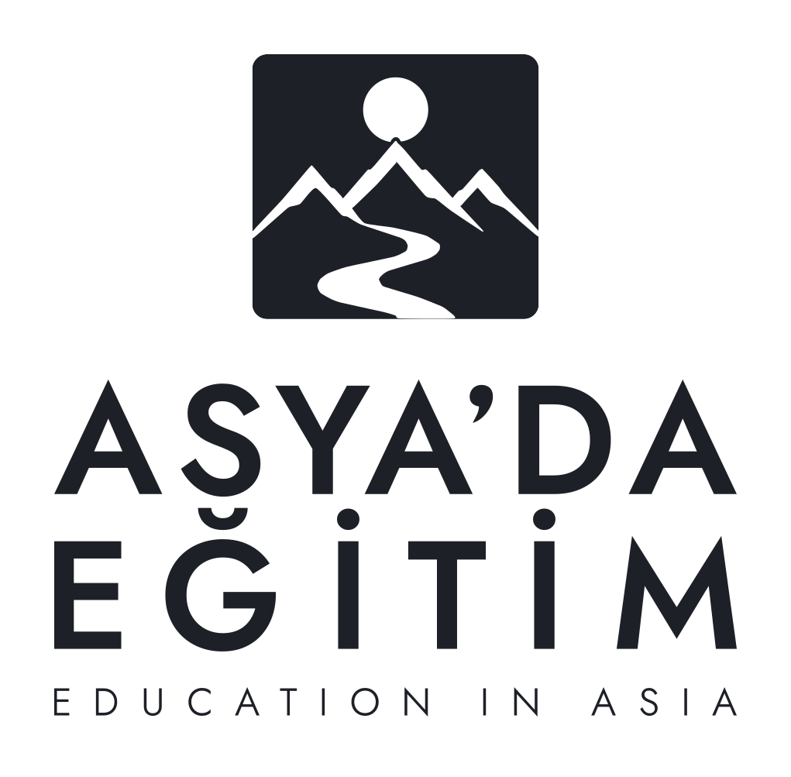
12ffb27f509e…H-02 · Primary horizontal
Web başlıkları ve yatay imzalar · Minimum 528px / 110mm
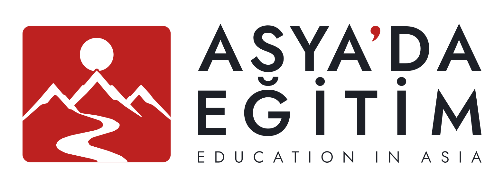
18b0b2b3a5ad…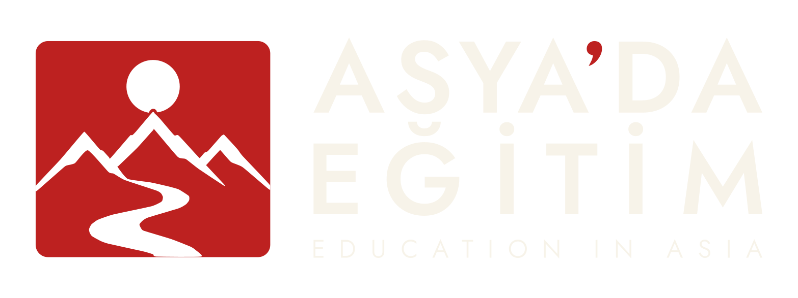
c9eb55f95a60…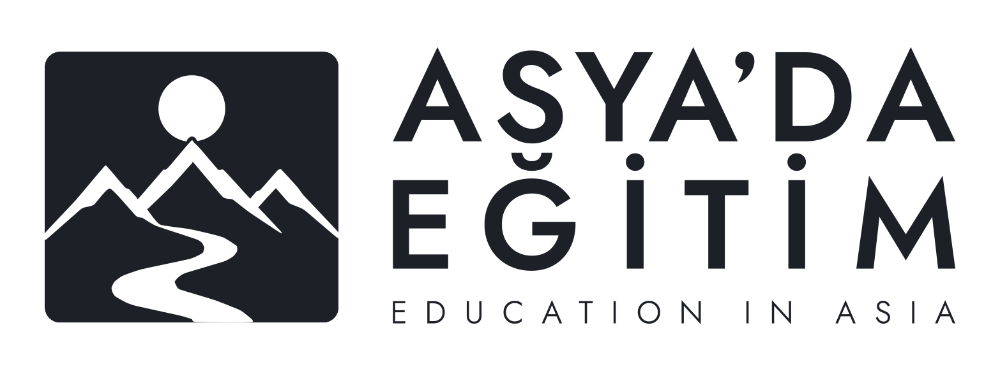
6d551532099e…C-03 · Compact
E-posta ve dar alanlar · Minimum 448px / 95mm
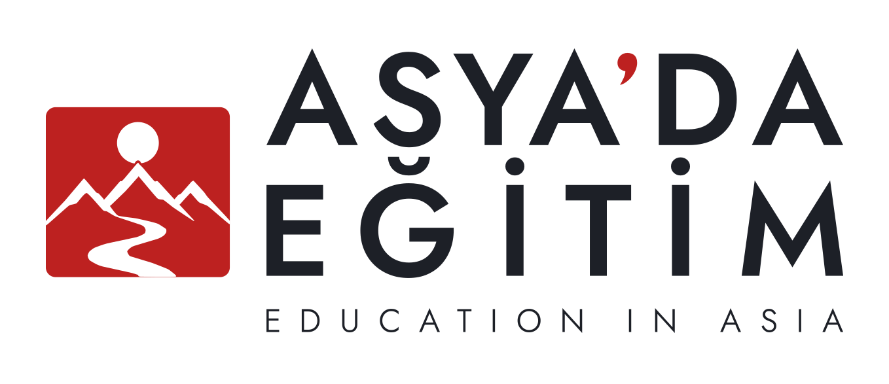
b23e01c23309…
7a164350c572…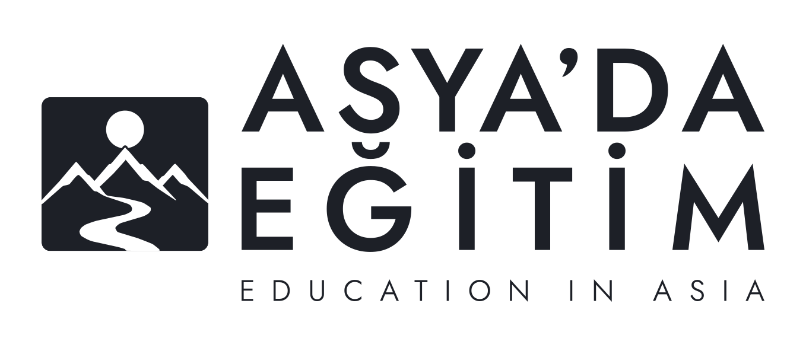
a9b6d67cb8b4…D-04 · Small-use / digital
Küçük dijital imzalar — YALNIZCA TÜRKÇE · Minimum 200px / 45mm · Altında yalnızca mühür kullanılır

2ff2263dcdab…
e77d5607426c…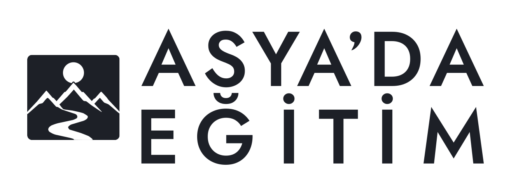
662bd107264e…F-05 · Formal bilingual
Sertifikalar ve törensel işler · Minimum 352px / 75mm

e1892f677d49…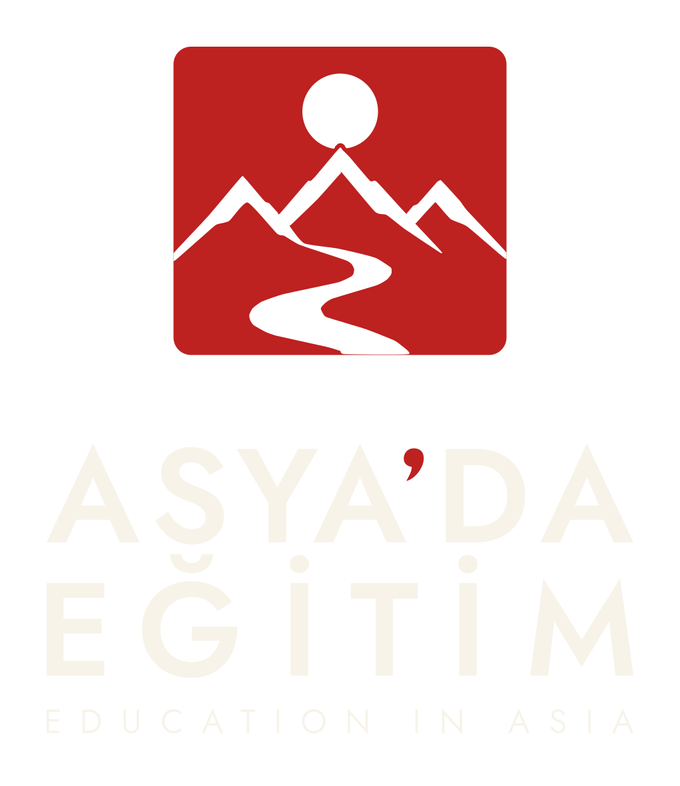
1433f5444515…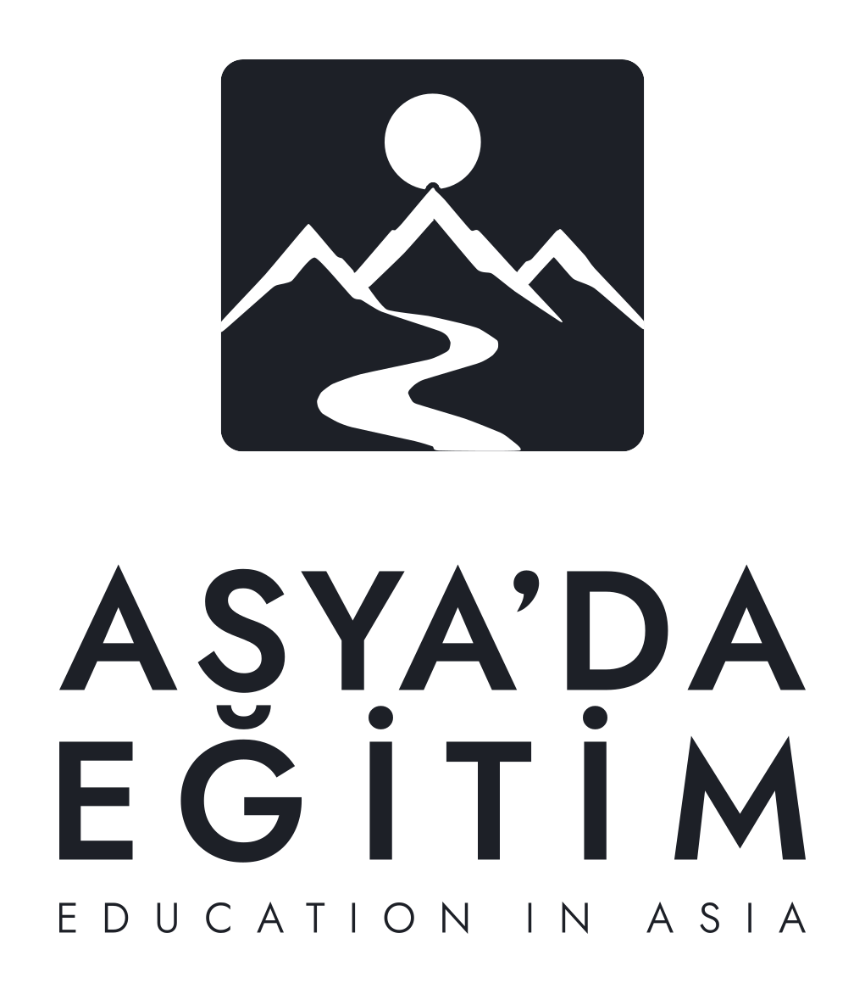
5a7b2a17459d…Minimum boyut ve clearspace
| Kilit | Ekran min. | Baskı min. | Not |
|---|---|---|---|
| P-01 | 352px | 75mm | Varsayılan dikey imza |
| H-02 | 528px | 110mm | Geniş başlıklar |
| C-03 | 448px | 95mm | Sıkı yatay kullanımlar |
| D-04 | 200px | 45mm | Yalnızca Türkçe; altında mühür-tek |
| F-05 | 352px | 75mm | Törensel |
Clearspace her kilidin SVG çerçevesine gömülü (70 birim). Orantılı ölçek ve konum dışında değişiklik yok: esnetme, kırpma, perspektif, yeniden renklendirme ve görüntü modeliyle üretim yasak. Her nihai çıktının manifestosu canonical_lockup_id, canonical_lockup_sha256 ve canonical_seal_sha256 kaydeder. Üretim kapısı: python3 studio/tools/verify_asyada_canonical_lockups.py.
Mühür SHA-256:
8f5d46f0302c4cc7e3765d3bfce9445f842dbd92f1e0f8fbe99f9f509c77e11aManifest SHA-256:
60fb1f6d105fa7c3d47e349ee75b191c023491967b75412a0323ba003b7ed351Hizalama: yatay 0 / dikey 0 · Ortak ölçü: 881 birim (P-01, H-02, C-03, F-05)
Makine-manifest (JSON) → · Kanonik galeri →
Bu noktaya nasıl gelindi?
Tamamı korunuyor; deneysel sayfalar üretimde kullanılamaz.
ARŞİV İlk yönler ve ülke galerileri — 12 territory, 5 ülke dünyası
Marka arayışının ilk turları: estetik yönler, ülke temaları, sembol ve enerji denemeleri.
ARŞİV Mühür varyantları V-01–V-10 — V-01 seçildi
On çeşit içinden V-01 (üç zirve + güneş) seçildi; mikro düzeltme ve kaynak denetimiyle vektöre kuruldu.
Mühür galerisi → · Sembol adayları → · Mikro düzeltme → · Kaynak denetimi →
KİLİT V-01 kanonik mühür — 2026-10-07, değişmez
İnsan onayıyla kilitlendi. SHA 8f5d46f0…, viewBox 0 0 400 370.
REDDEDİLDİ Wordmark adayları W1/W2/W3 + A/B — B reddedildi, A/700 onaylanmadı
Referans denetimi ve üç aday; hiçbiri kanonikleşmedi, tarihsel kayıt olarak duruyor.
ARŞİV Kilit sistemi ve birleşik geometri — 5 varyant, W=881
Beş yapısal dizilim; üç satır tek ölçüde. Tutarlılık deneyi (16 çıktı) model sınırlarını belgeledi.
Kilit sistemi → · Birleşik geometri → · Tutarlılık deneyi → · Pürüzsüz kontur (arşiv) →
SEÇİLDİ Tipografi ağırlık çalışması — Jost 550 TR / 350 EN
Referans-öncelikli karşılaştırma: Türkçe 400–650, İngilizce 200–350. Seçilen çift bu sayfadaki wordmark'tır.

ARŞİV Final kilit ailesi incelemesi — onay öncesi kayıt
Seçilen 550/350 ile beş kilit, dört hizalama alternatifiyle incelendi; hizalama 0 onaylandı.
CANONICAL Kanonik kilit manifestosu — 2026-10-08, üretim kaynağı
15 SVG + makine manifestosu + doğrulayıcı. Gelecek tüm markalı çıktılar manifestteki tam SVG'leri kullanır.